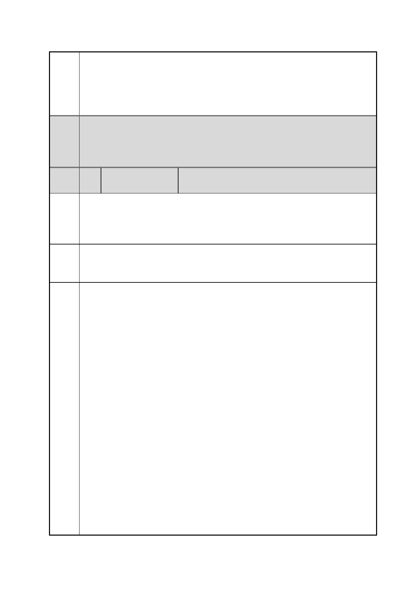

臺北市都市計畫委員會 公民或團體陳情意見綜理表
案
名
編
號
陳情
理由
建議
辦法
「變更臺北市信義區逸仙段二小段 33 地號等 21 筆土地（原臺北機廠）
工業區為創意文化專用區、特定專用區、道路及綠地用地主要計畫案」
及「擬定臺北市信義區逸仙段二小段 33 地號等 21 筆土地（原臺北機
廠）創意文化專用區、特定專用區、道路及綠地用地細部計畫暨劃定
都市更新地區計畫案」
復舊之規範，請補充相關規範文字，以確保原貌保留目標得以
落實。
（五）其餘文字及相關圖面依市府所送修正細部計畫書內容通過。
（六）公民或團體陳情意見審決如上述決議內容。
2 陳情人
楊○君
就台北機廠全區，擬將園區內建築轉為「創意文化園區」（如美術館
等），及數個「特定專用區」，我在此持反對意見，應正視台北機廠自
日治時期以來作為火車修護工廠的功能，以及園區內大量留存的歷史
文物與建築，就其特性活化為「交通史博物館」（詳附件全文）
改變原先脫離歷史意義的美術館與其他商業用途的建案提議，依台北
機廠本身特性，就地闢為「交通史博物館」，以延續台北機廠固有的
歷史意義（詳附件全文）。
附件：
數日前已於台北市政府都市發展局網站，及平面媒體上得知台北機廠
未來的發展方向，分別為將古蹟群以及周邊非歷史建築用地，暫定改
建為美術館、文創用地與商辦大樓等用途，完全與台北機廠自日治時
代以降，長期作為「火車修理工廠」的用途悖離。我在此聲明對以上
提案持反對意見，並簡述以下理由，祈請臺北市都市計畫委員會能再
行評估目前這個對臺北機廠破壞性極大的都市計畫提案。
台北機廠自日治時期 1935 年放用後，即長期專門做為台鐵重要的車
輛維修與改裝基地，並保留了大量維修蒸汽火車、柴油機車的物件與
特殊建物。目前機廠中的「澡堂」、「組立工場」、「鍛冶工廠」、「原動
室」 … 等亦已列為市定古蹟，並獲得眾多學者為其歷史意義背書，
重要性不言自明，更是台北市內最後一塊完整保留的重工業區域。內
部眾多的舊台鐵辦公用建物也都未遭受破壞至今，亦相當難得。
今日台北機廠所在的信義區，已因大規模的都市發展計畫而有了許多
的商場、辦公建物等。鄰近台北機廠的松菸園區、京華城、台北 101
與世貿展覽館、國父紀念館、台北小巨蛋及正在興建中的台北大巨
蛋…等，皆充分滿足了台北市民購物與運動休憩的功能。而台北機廠
目前規劃的方向，卻與原先作為火車工廠的功用相悖離，且其他非劃
為古蹟的部分（約占全區 56 %）亦將轉化為商業用途。此舉將破壤
整體園區的完整性與歷史意義，且經過大幅改變用途的結果，也會使
第 14 頁/共 154 頁